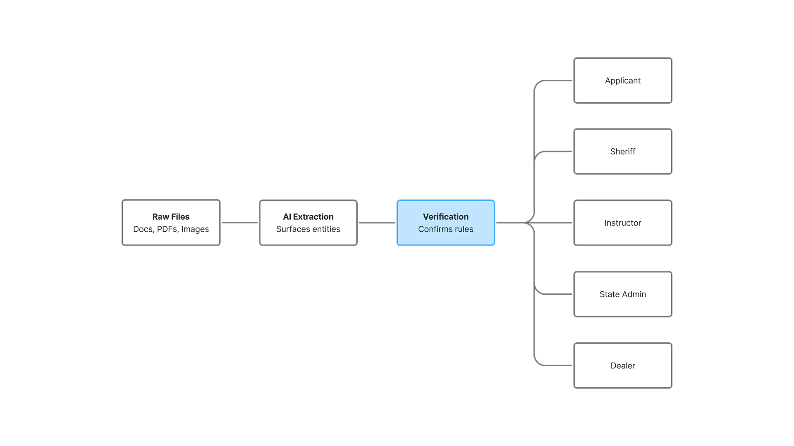
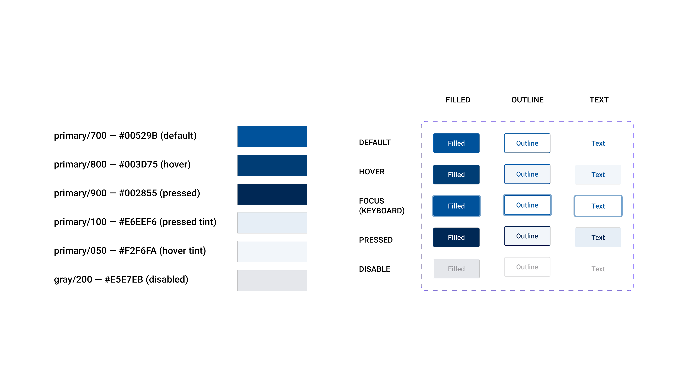
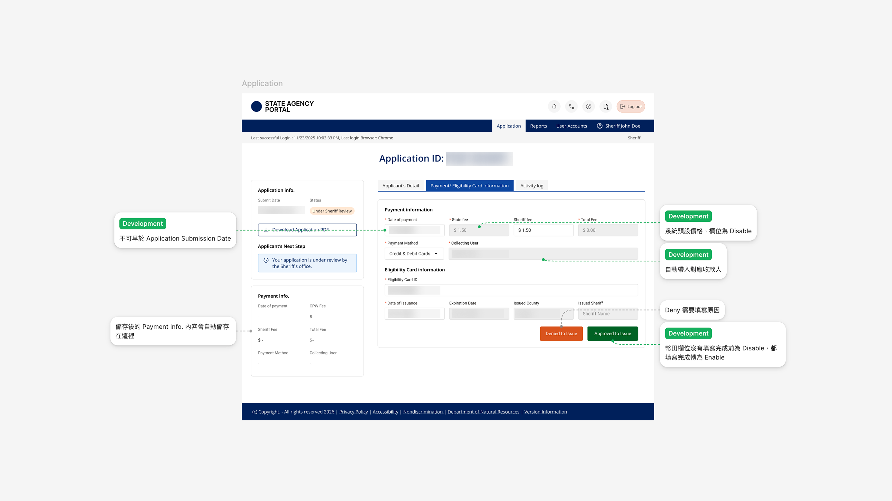

U.S. State Government Project · Bid Prototype · 2026
Winning a $1.6M+ US State Government Bid: AI-Accelerated Prototyping in 48 Hours
- My role
- Product Designer & PM — delivered the high-fidelity interactive prototype within 48 hours, then carried the design into delivery with engineering and US-based stakeholders.
- Timeline
- January 2026 – April 2026
3 months: 48-hour rapid bid sprint + 11-week system deepening & delivery - Core impact
-
- Won a $1.6M+ US state government contract by delivering a high-fidelity interactive prototype within 48 hours
- −60% concept time (5 days → 2 days) using Claude to analyze government business documents and generate UI
- Workflow became team SOP; design tokens reused across later bids

Case summary
Problem
Extremely tight bid deadline in an unfamiliar government domain, with no time for traditional discovery.
Decision
Fed government business documents to AI to generate an operable prototype grounded in existing business logic, then built it through design system → design tokens → interactive HTML prototype, because evaluators trust what they can click through.
Result
Won a $1.6M+ contract; high-fidelity UI prototype delivered within 48 hours; concept time 5 days → 2 days (-60%); workflow adopted as team SOP, tokens reused across later bids.
Project background
A multi-role US state government portal connecting several user groups through regulated business workflows. The bid called for a convincing, interactive proposal built on regulatory business logic the team had never worked with before.
01 Problem & task
The team had an extremely tight 48-hour deadline to submit a bid for a US state government contract, in a government domain none of us knew. There was no time for traditional discovery such as stakeholder interviews and process audits, yet the proposal still had to map complex business logic across multiple interconnected user roles.
Business goal
Conceptualize, design, and deliver a fully interactive, high-fidelity prototype within 48 hours to win the $1.6M+ government contract.
Design goal
Turn fragmented government business documents into a clear Information Architecture (IA) and UI flows that stay faithful to the existing business logic.
02 Action & decisions
Phase 1: AI-Augmented Concept & Information Architecture

With no time for traditional discovery, I built the concept on AI analysis of the source material:
- AI-Powered Analysis: I fed government business documents into Claude to extract the business rules, then had it generate UI grounded in that existing business logic. Concept time dropped from 5 days to 2 (-60%).
- Multi-Role Flow Mapping: I mapped the UI flows for every user role, defining clear data perimeters and access permissions.
Phase 2: Design System → Design Tokens → Interactive HTML Prototype

- Design Tokens: I structured design tokens in Figma Variables on top of the design system, so the AI-generated flows could scale into consistent high-fidelity screens quickly.
- Interactive HTML Prototype: Evaluators trust what they can click through, so I delivered the result as an interactive HTML prototype instead of static screens, within the 48-hour window.
Phase 3: Post-Bid Deep Dive — Detailed Design & Engineering Handoff

After successfully securing the contract, I transitioned into a dual Product Designer and PM role for the implementation cycle:
- Fleshing Out Edge Cases: I expanded the prototype beyond the initial "Happy Path," systematically designing for edge cases and complex user interactions.
- Single Source of Truth (SSOT): I aligned Figma Variables precisely with engineering's variable naming conventions, so developers could build from pre-validated blocks, and the tokens became reusable across later projects.
03 Result & impact
Won a $1.6M+ US state government contract by delivering a high-fidelity interactive prototype within 48 hours.
Used Claude to analyze government business documents and generate UI grounded in existing business logic, cutting concept time from 5 days to 2.
The AI-assisted workflow became team SOP, and the design tokens were reused across later bids.
04 Reflection & next steps
Under a critical 48-hour window, the ultimate trade-off was "depth vs. breadth." I strategically prioritized designing the complete Happy Path (the primary core user flows) while deliberately sidelining edge cases (e.g., an applicant cancelling mid-registration). This project taught me that senior leadership means knowing how to make pragmatic design compromises to meet pressing business milestones.
What I would do differently
Earlier Cross-Functional Alignment
Establish direct data-sharing channels with the business development team from day one to ensure a unified, holistic understanding of complex client workflows across the entire team.
User-Centric Validation over Assumptions
Shift from relying on past project experiences to advocating for continuous user feedback loops, ensuring system logic is validated by real user behaviors rather than assumptions.
Next step
Data-Driven Iteration
Launch targeted usability testing with key personas while implementing GA and Heatmaps to merge qualitative and quantitative insights for continuous product optimization.